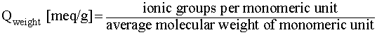

Resin
|
Synthetic resins used in ion exchange columns have two main components: a matrix (also known as the resin backbone) and covalently attached functional groups. The matrix is prepared by polymerizing small molecules to obtain very long chains with high molecular weights. Customized matrices allow for final resin products with a wide variety of physical forms including gels, beads for packed beds or even sheets and films. Chemical stability of the resin matrix is vital in ultra-pure water applications, because degradation can cause monomers or similar organic compounds to leach into the water (Harland, 1994). While the specific monomer used depends on the desired properties of the resin, common ones include aniline, styrene and divinylbenzene (DVB). |
Figure 2. Common Matrix Monomers
Aniline
|
Styrene
|
Divinyl Benzene
|

Chemfinder.com, 2004
|
According to DeGenova (2001), most modern ion exchange resins consist of styrene-based matrices copolymerized with a small amount (2 to 8 %) of DVB. This causes the polymer chains to cross-link with one another, rendering the finished product insoluble in water. Polystyrene resins with small amounts of DVB are usually soft, gelatinous materials while ones with large amounts of DVB are hard and durable (Helfferich, 1962). Once synthesized, functional groups are usually added to the aromatic rings of the matrix through electrophilic aromatic substitution . However, some resins can be prepared directly from polymerization if the functional groups (such as the phenolic hydroxyl) are intrinsic to the monomer. Types of Functional Groups Strong Acid Cation resins contain ionic groups that are completely de-ionized at a wide range of pH values. These groups are usually derived from sulfuric (H2SO4) and phosphoric (H3PO4) acids (Pontius, 1990). |
Figure 3. Strong Acid Functional Groups
|
sulfonic
|
phosphonic
|
phosphorous
|
Pontius, 1990
|
Weak Acid Cation resins operate under neutral and basic conditions because their functional groups are protonated at acidic pH values. These resins are usually made from carboxylic acid or phenol derivatives (Pontius, 1990). |
Figure 4. Weak Acid Functional Groups
|
carboxylic
|
phenolic
|
Pontius, 1990
|
Strong Base Anion resins lack acidic hydrogen atoms and remain ionized under a wide range of pH values. While these resins usually contain quaternary amines, similar structures, such as quaternary phosphonium and tertiary sulfonium groups, can also used (Helfferich, 1962). |
Figure 5. Strong Base Functional Groups
|
quaternary amino
|
phosphonium
|
sulfonium
|
Helfferich, 1962
|
Weak Base Anion resins operate at low pH due to their protonated primary, secondary and tertiary amines. However, highly basic conditions will deprotonate these groups, making them neutral and unable to participate in ion exchange (Helfferich, 1962). |
Figure 6. Weak Base Functional Groups
|
primary amine
|
secondary amine
|
tertiary amine
|
Helfferich, 1962
|
Chelating resins are often classified as amphoteric because they usually contain both basic and acidic subgroups. They are designed to remove specific ions or ligands by forming a complex known as a chelate . Chelating resins are best known for their ability to remove heavy metal ions, especially divalent or trivalent cations such as Cu+2, Pb+2 and Cr+3. An example of a common chelating agent is EDTA (ethylene diamino tetraacetate), which is used to treat lead poisoning (Harland, 1994). |
Figure 7. Chelating Functional Groups
|
iminodiacetate |
aminophosphonic
|
thiocarbamide |
Harland, 1994
|
Capacity Weight CapacitySince each resin contains a finite number of functional groups, there is a limit to the number of ions that can be exchanged before the regeneration cycle. This intrinsic property of the resin is known as its total weight capacity and is usually measured in units milli-equivalents per unit mass (i.e. meq/g). Most modern commercial resins have capacities between 2 and 10 meq/g (Helfferich, 1962).
Theoretical total weight capacities are determined by taking the ratio of ionic groups to mass for each monomeric structural unit of the resin according to equation 1. |
|
 |
(1)
|
For resins comprised of more than one monomer, it is necessary to take the average molecular weight based on the relative abundance of each monomer.
Volume CapacityWhen designing an ion exchange system, it is often more useful to report the resin capacity in terms of the number of ionic groups per volume of packed bed. Since synthetic resins swell when placed in water, the volume of the bed is usually larger than the volume of the dry resin. Unlike weight capacities as previously mentioned, volume capacities must be experimentally determined. According to Helfferich (1962), volume capacities are usually measured in fully swollen beds containing the hydrogen (H+) form of the resin and are related to the weight capacity according to equation 2. |
|
|
(2)
Actual (Experimental) CapacityThe actual capacity of a particular ion exchange resin is less than the total capacity and depends on the operating conditions of the column. It is often difficult to predict because the actual capacity depends on several design parameters including concentration, pH and temperature. Also, it is nearly impossible to ensure that each monomer will have a functional group, especially when they are added later. Consequently, the actual capacities of ion exchange resins must be determined experimentally by titration. Plots of the data usually start with small slopes that increase as more titrant is added. The actual capacity of the resin occurs when the pKa equals the pH, according to the Henderson-Hasselback equation: |
|
|
(3)
|
If the pH and pKa are equal, then the logarithmic term must be zero. This can only happen when the concentrations of acid and base are the same, which occurs precisely when the resin’s capacity is completely exhausted. Graphically, this point on a titration curve occurs when the slope is the steepest, as shown in figure 8. |
Figure 8. Titration Curves for Typical Ion Exchange Resins